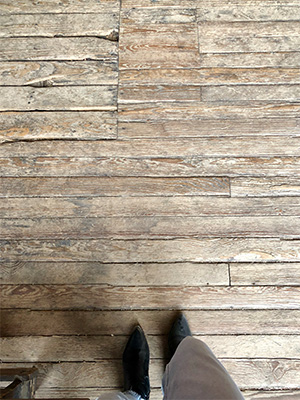
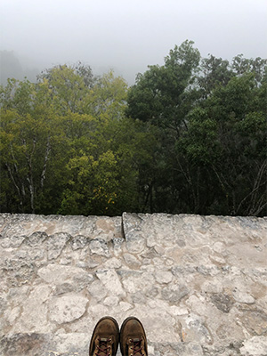
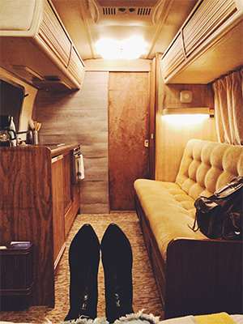
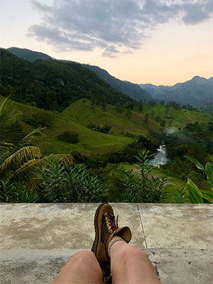

For the first three months of the longest year of our lives (remember 2020?), I awoke in Antigua, Guatemala to take my seat across the table from Lucci, our Guatemalan host. To my left and right, my flatmates: an Austrian volunteer, Thomas, and a fellow student, Nao (who’d left behind a tiny, tidy apartment in Japan).
Others came and went, too--from Holland and Belgium and Spain. The morning conversations were often a mix of Spanish, English, and long pauses--we were ragtag, tenuously connected, our currency some combination of encouraging looks and strong coffee. It was a pre-pandemic place far from home in which, outwardly--both linguistically and metaphorically--I could contend only with the present. But, in conversation with myself, I thought about the future.
Storytelling--the shaping, chipping away, building back up of language--has often been a part of my professional life. From publishing to event marketing, and even in the fields of human and social services, my work has long centered on stories--on how language means to make connections, to make change, and to move people.
So anyway, let's tell some stories together.




And I packed up the dust / of all that I owned
handkerchief hung from a pole / I rolled out the day that the apples fell